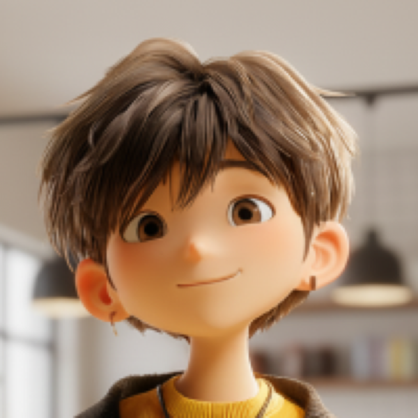
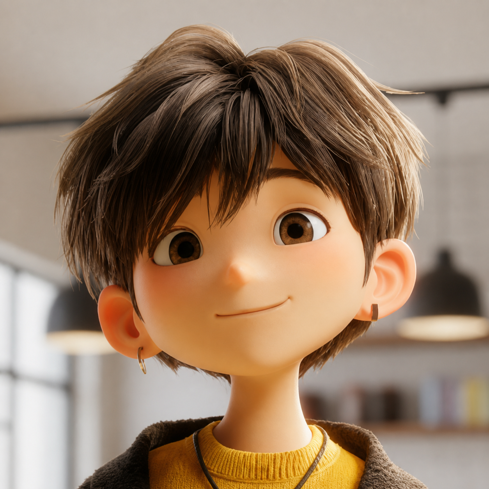
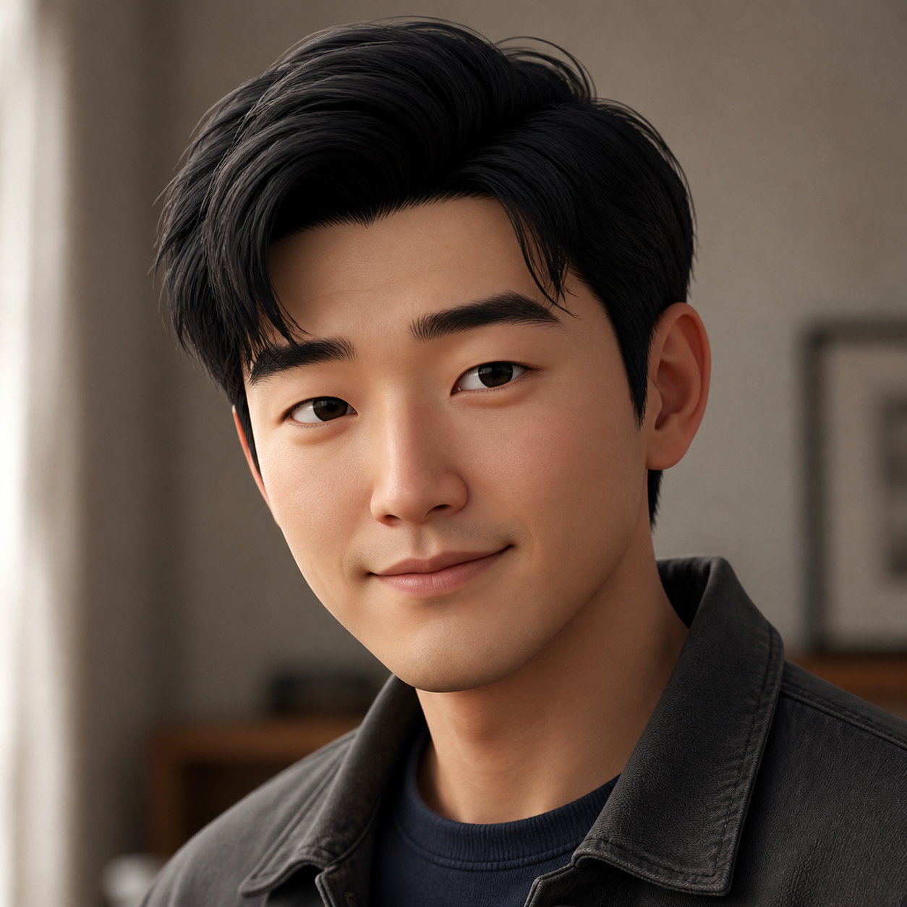
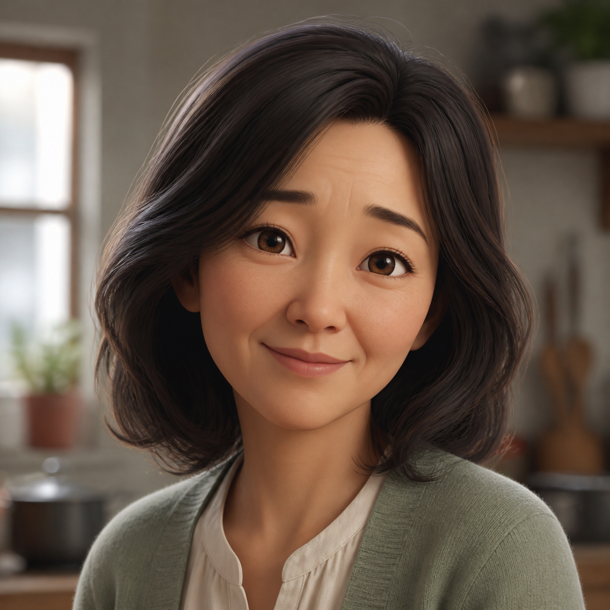
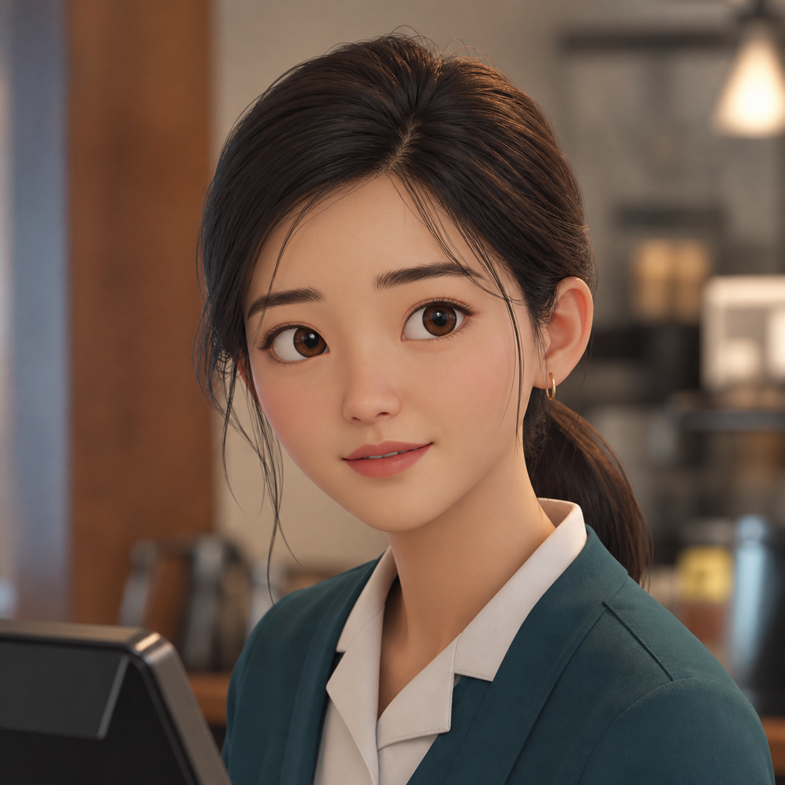
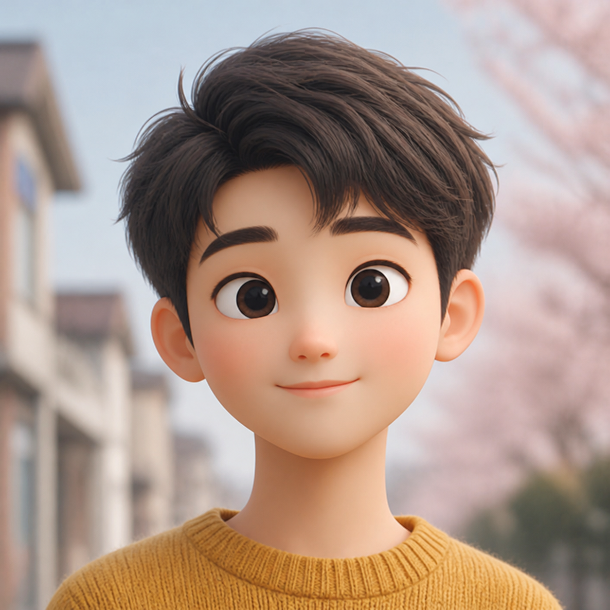
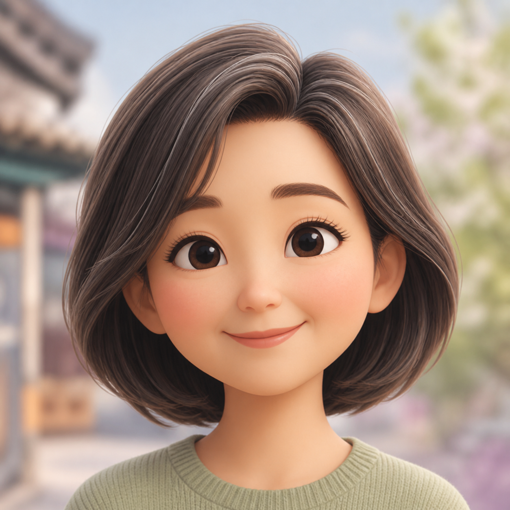
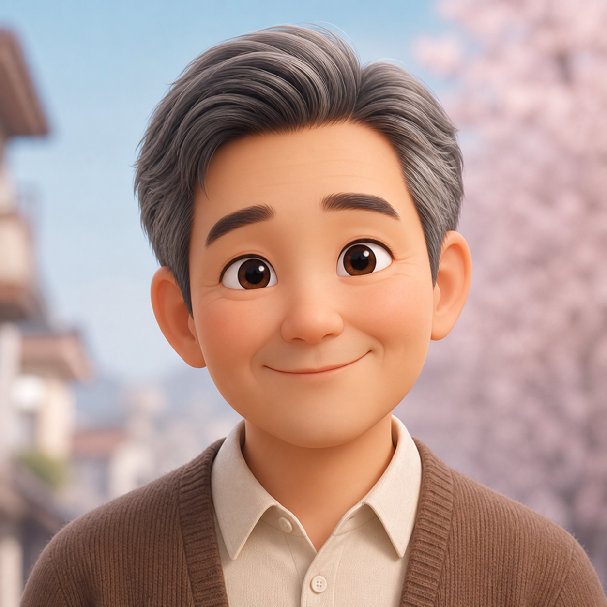

Portrait comparison
The final section contains studies only. They are not wired into any lesson.
Quality references
 HanaOriginal quality reference
HanaOriginal quality reference
 HarukaOriginal quality reference
HarukaOriginal quality reference
Current lesson portraits
 JiminUser-supplied 200 px source
JiminUser-supplied 200 px source
 MinsuFirst generated set
MinsuFirst generated set
 MijeongFirst generated set
MijeongFirst generated set
 SoojinFirst generated set
SoojinFirst generated set
New candidate studies

Jimin — upscaleSame source image, resized to 600 px

Jimin — rerenderMore detailed, but identity and styling drifted

Young manNaturalness study; somewhat too photorealistic

Middle-aged womanStrongest naturalness direction so far

Service workerImproved texture; still slightly polished
Round 2 — reference-matched stylization

Young manAnimated-feature proportions and simplified materials

Middle-aged womanAge variation within the Hana and Haruka visual language

Older manMature character without semi-realistic rendering